森へ出かける
マスターどんぐりと、今日の探検へ。

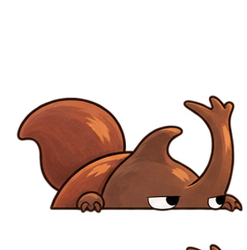
お試しページ · キャラクターアニメーション01 — みつける
足もとのどんぐりに、森の仲間も気づいたみたい。タヌキが葉陰からのぞき、リスが鼻を近づけてくんくん。

02 — かぞえる
見つけたどんぐりを撮影して、数を確かめます。
マスターどんぐりと、今日の探検へ。
見つけたどんぐりを画面におさめる。

数を確かめたら、見つけた場所の近くへ。
03 — 森の仲間
ゆっくり息をするクマ。跳ねて、どんぐりをかじるリス。葉陰から出て丸まるハリネズミ。枝の上で首を傾けるフクロウ。
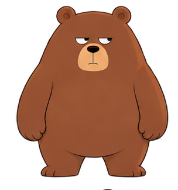
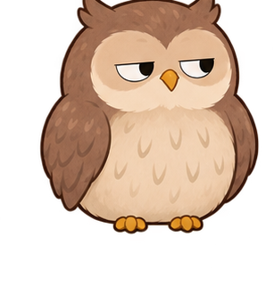
それぞれの場所で、森の時間。04 — 森を見る
木の根元や落ち葉の下。ゆっくり歩くと、森の上にも気配が見つかります。

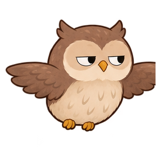
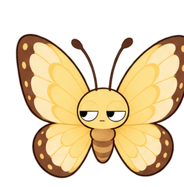
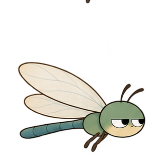
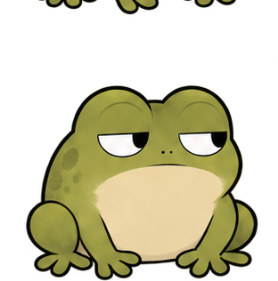
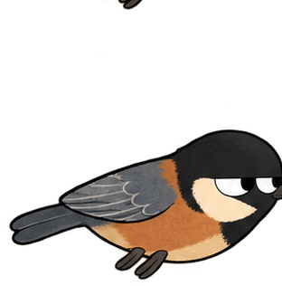
秋の仲間：小鳥が、フクロウの飛ぶ空を横切ります。
秋の森を舞台に、季節ごとの仲間の動きを見比べられます。
急がないで歩くと、見えるものが増えてくる。
05 — 元の場所へ
マスターどんぐりに、リスとタヌキがついていく。どんぐりは森の仲間たちの食べものや、次の芽吹きにつながるもの。見つけた場所の近くへ戻そう。
公園の自然を、みんなで大切に。
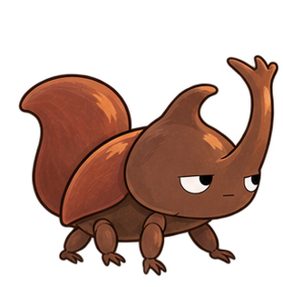
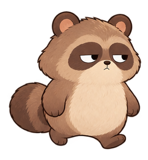
見つけた場所 見つけた場所の近くへ、いっしょに返しにいこう。
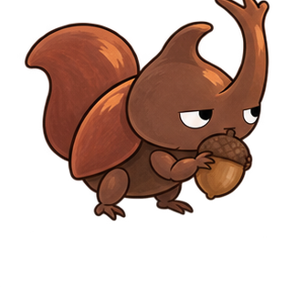
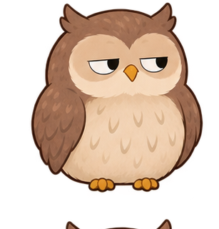
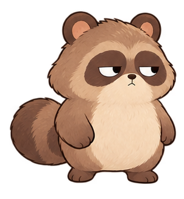